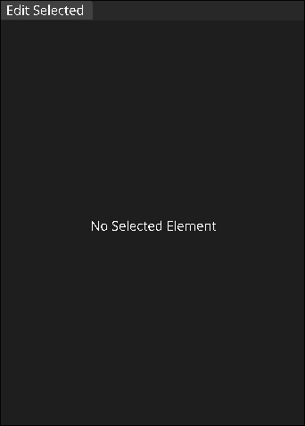
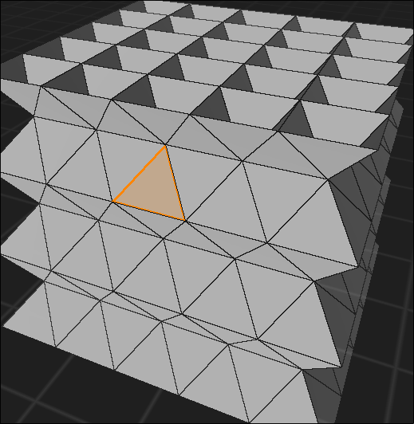
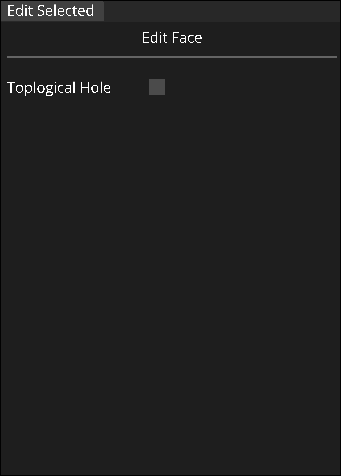
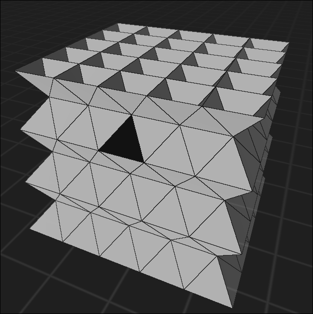
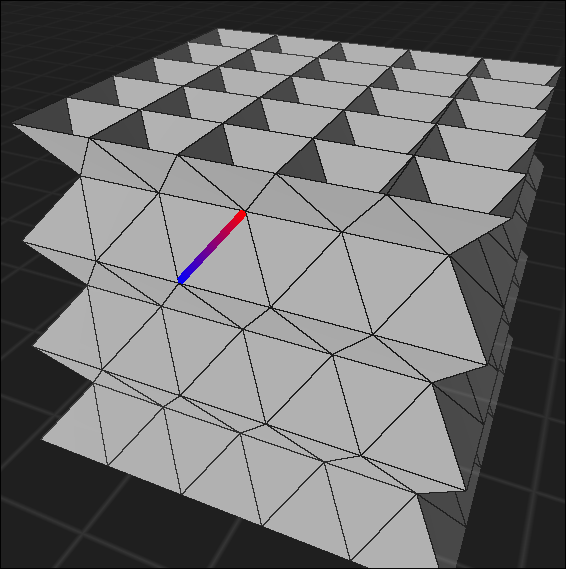
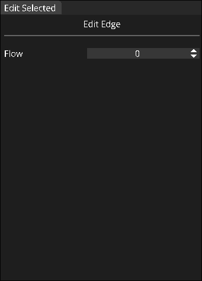
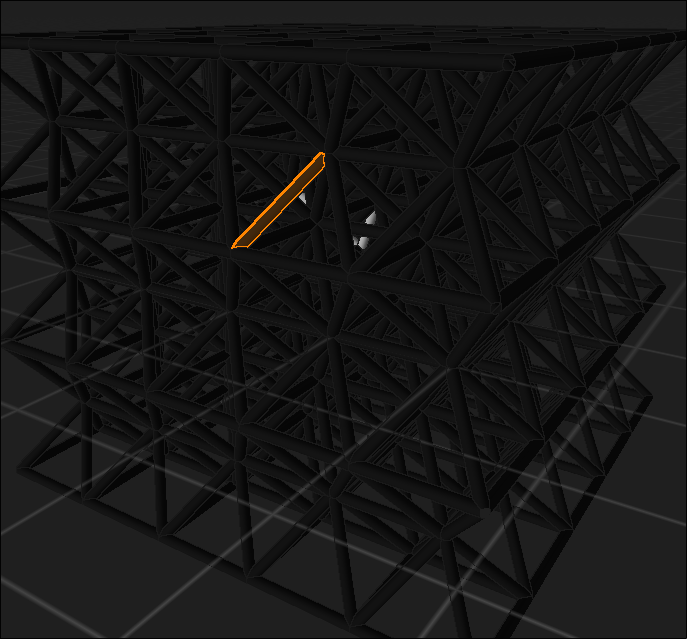

Edit Selected
Very important to know!
Broad Overview
The edit selected panel is located in the upper left of the application. This panel will be where you can modify a selected element of your configuration, such as a face or an edge!

At first, it will say "No Selected Element" because nothing has been selected yet! That's ok, we can go over how to select an element now.
Selecting Faces
To select a face, you'll need to be in face select mode.To do this, hold down left control and press T. You should now be able to hover over faces you can see, and click to select a face!

Once you select a face, you should see an option to toggle the face as a topological hole in the edit panel. This will designate your face as a hole or not!

Faces that are holes will also be colored jet black, so it should be very visually apparent if a face is a hole or not without needing to select it.

If moving your mouse to the edit panel and clicking a small checkbox gets annoying for you, you can also press Q while selecting a face to toggle it as a hole!
Selecting Edges
To select an edge, you'll need to be in edge select mode. To do this, hold down left control and press E. You should now be able to hover over edges you can see, and click to select an edge!

Once you select an edge, you should be able to modify its flow. To do this, click and drag the numbered box in the panel UI in either direction, or click on the small arrows to increment or decrement flow!

When in Face mode, you may notice that when you select an edge, it has a gradient from blue to red. This indicates the direction flow is going. Flow goes from blue to red!
You can also select edges in Edge mode as well! This may look a little different, but may feel more intuitive to you, and may be easier for you to select an edge deeper inside the structure.

In Edge mode, you'll also be able to see the value of the flow as the color, so it'll be easier to keep track which ones you've touched and configured!